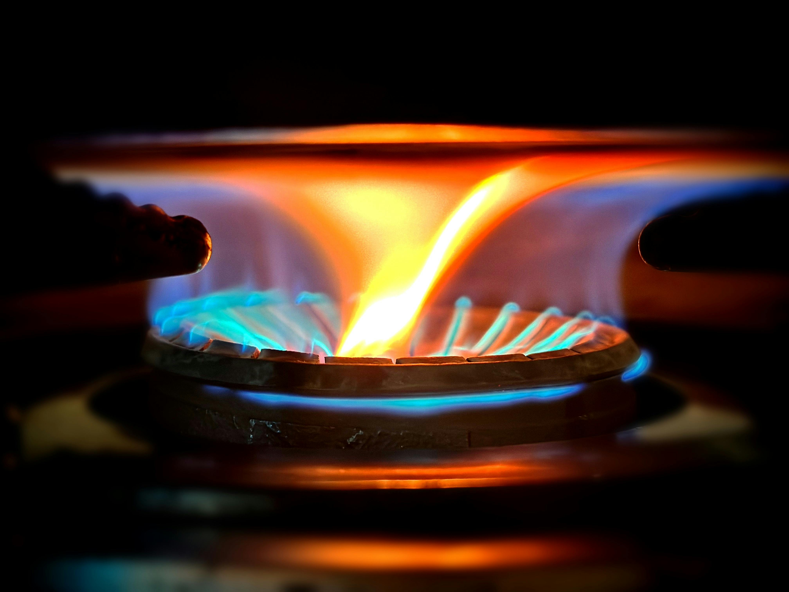

About FindMyPropane.com
An independent directory of propane refill and exchange locations across Texas and New Mexico — with real addresses, phone numbers, and customer ratings for every listing.

Why We Built This
Finding a place to refill or exchange a propane tank sounds simple — until you need to do it on a Sunday afternoon in an unfamiliar part of town. Google Maps results for "propane near me" often include gas stations that stopped offering the service, hardware stores that only do exchange (not refill), or businesses with no hours listed. We built FindMyPropane to cut through that noise.
Each listing in our directory includes the business name, street address, phone number, and service type (refill, exchange, or both) so you know exactly what to expect before you make the drive.
What We Cover
FindMyPropane currently covers major cities across Texas and New Mexico, two states with high propane demand due to rural geography, outdoor cooking culture, and cold desert winters. Our directory includes:
- Texas: Houston, Dallas, San Antonio, Austin, Fort Worth, Arlington, Corpus Christi, and El Paso
- New Mexico: Albuquerque, Santa Fe, and Las Cruces
We're actively expanding. If your city isn't listed yet, let us know and we'll prioritize adding it.
How Listings Work
Listings are sourced from publicly available business data and verified for accuracy at the time of publication. Each entry shows the business name, address, phone number, service type, and customer rating where available. Ratings are pulled from Google Maps and reflect real customer reviews.
We update listings regularly, but hours, pricing, and availability can change. We recommend calling ahead before visiting — especially for larger tank fills or on holidays. If you notice a listing that's outdated or incorrect, please report it using our contact form.
Refill vs. Exchange — What's the Difference?
This is one of the most common questions we hear from first-time propane buyers:
- Propane refill: A technician fills your existing tank to its rated capacity (typically 20 lbs for a standard grill tank). You pay per gallon for exactly the propane you receive. This is almost always the better deal — often 30–40% cheaper per pound than exchange.
- Propane exchange: You trade your empty tank for a pre-filled one from a cage at a hardware store or gas station. Convenient, but exchange tanks are typically only filled to about 15 lbs — not the full 20-lb capacity your tank can hold.
If cost efficiency matters and a refill station is nearby, refill wins. If you need propane immediately and a 24-hour exchange rack is the closest option, exchange is fine. Our full guide on refill vs. exchange breaks down the math in detail.
Add or Update a Listing
Know of a propane supplier not in our directory? Operate a propane refill business and want to be listed? Use the contact form to submit a location. Include the business name, address, phone number, and whether they offer refill, exchange, or both. We review all submissions and add verified locations to the directory.
Advertising
FindMyPropane.com is supported by advertising through Google AdSense. Ads help cover the cost of maintaining and expanding the directory. We do not accept paid placements or sponsored rankings — every listing appears based on location and availability, not payment. See our Privacy Policy for details on how advertising data is handled.